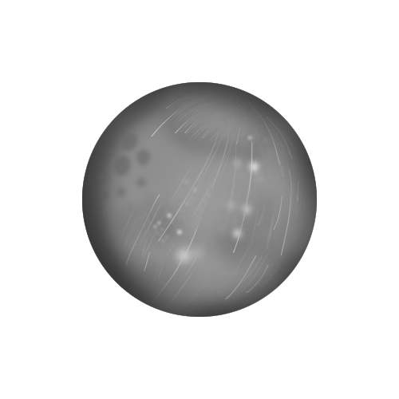
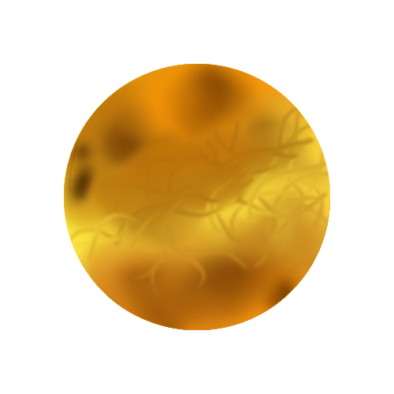
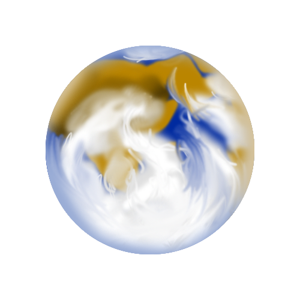
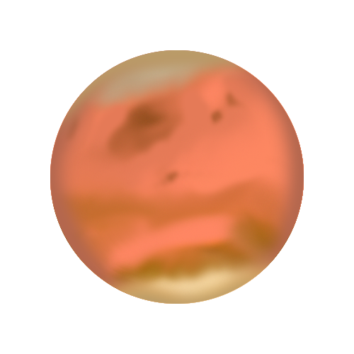
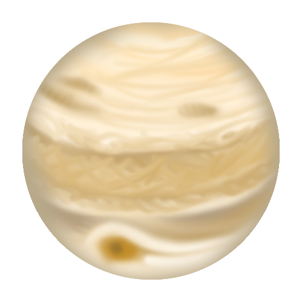
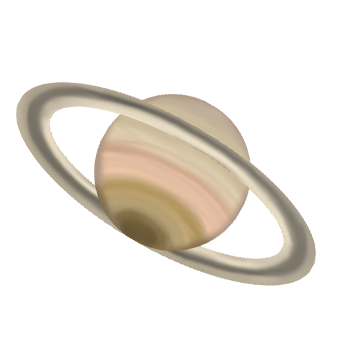
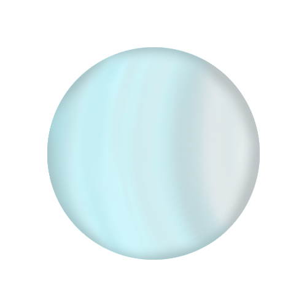
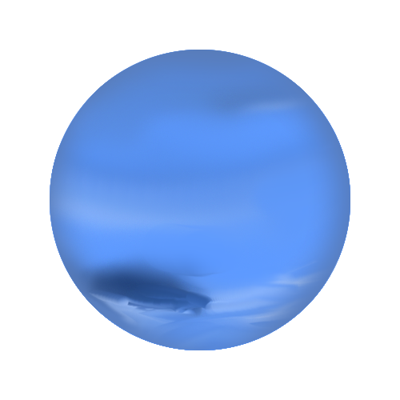

수성(mercury)

그리스 신 헤르메스(Hermes)를 상징한다. 태양에 가장 가까운 행성이고 가장 작은 행성이다. 대기가 없어 낮과 밤의 표면온도 차이가 매우 크다. 표면에 달과 같이 운석 구덩이가 많이 남아 있다.
금성(venus)

그리스 신 아프로디테(Aphrodite)를 상징한다. 태양계 생성 중 지구에서 가장 밝게 보인다. 이산화탄소로 이루어진 두꺼운 대기가 있다. 표면기압(약 90기압)이 높고 표면온도가(약 470℃) 매우 높다.
지구(earth)

그리스 신 가이아(Gaia)를 상징한다. 물과 대기가 있어 생명체가 살고 있다. 바다가 있어 우주에서는 푸르게 보인다. 위성이 1개(달) 있다.
화성(mars)

그리스 신 아레스(Ares)를 상징한다. 토양에 산화 철 성분이 많아서 붉게 보인다. 과거에 물이 흘렀던 흔적이 있다. 양극 지역에 극관이 존재, 계절의 변화가 나타난다. 위성이 2개(포보스, 데이모스) 있다.
목성(jupiter)

그리스 신 제우스(Zeus)를 상징한다. 재양계 행성 중 크기가 가장 크다. 표면에 적도와 나란한 줄무늬가 나타나고 대기의 소용돌이인 대적반이 나타난다. 고리가 존재하고 가니메데, 칼리스토 외에 많은 위성이 존재한다.
토성(saturn)

그리스 신 크로노스(Kronos)를 상징한다. 물보다 밀도가 작으며 표면에 적도와 나란한 줄무늬가 나타난다. 얼음, 암석 조각으로 이루어진 뚜렷한 고리가 존재한다. 수많은 위성 중 타이탄에는 대기가 있다.
천왕성(uranus)

그리스 신 우라노스(Uranos)를 상징한다. 대기 중 메테인이 붉은 빛을 흡수하여 청록색으로 보인다. 자전축이 공전 궤도면과 거의 나란하다. 고리가 존재한다.
해왕성(neptune)

그리스 신 포세이돈(Poseidon)를 상징한다. 파란색으로 보인다. 표면에 대기의 소용돌이로 생긴 대흑점(검은 점)이 나타나기도 한다. 가는 고리가 존재한다.